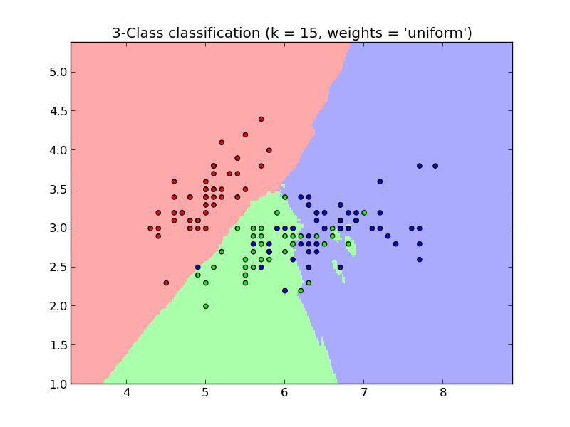
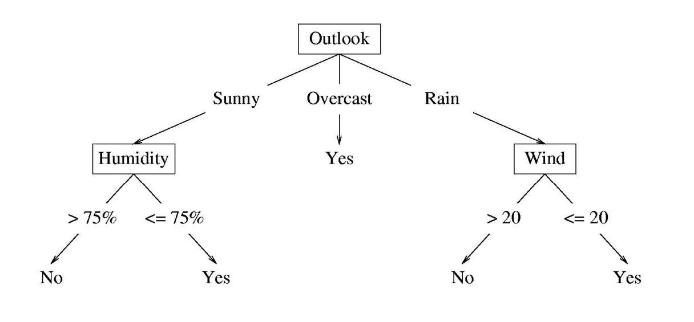
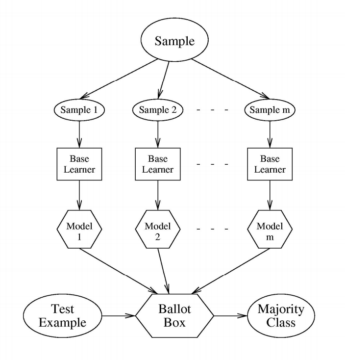
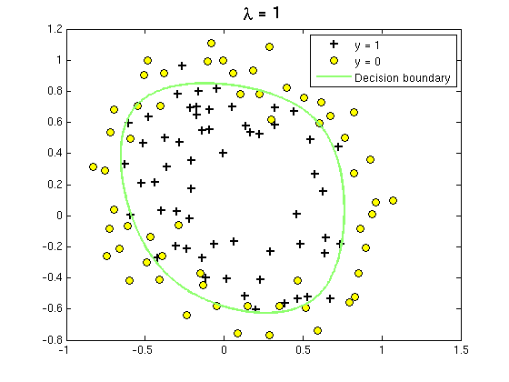
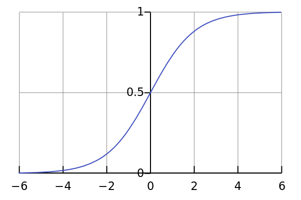
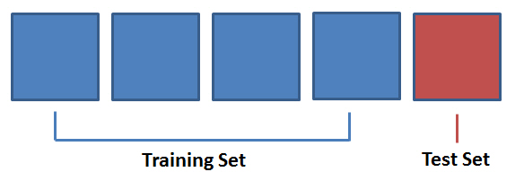
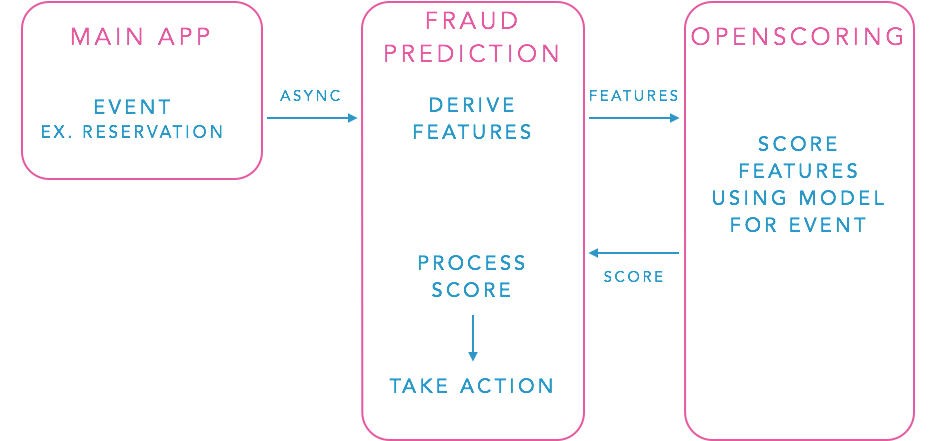

Classifers 101
@anthonysutardja
the goal of classification is to learn a mapping from the set of inputs $x$ to the set of outputs $y$
Example uses:
- email spam
- detecting fraud
- unusual server logs
- handwriting digit classification
- classifying flowers
- etc.
the goal of this presentation is to cover the basics of some common classifiers to help get you started
Getting Started
Handy python tools:
numpyandscipymatplotliborprettyplotlibsklearn- Also, Shark for
C++and Weka for Java users. - (And Spark for really large data sets.. more later)
The routine:
- 1) Split dataset into training and holdout
- 2) Choose a classifier
-
- 2a) Tune parameters
- 2b) Cross validate
- 2c) Repeat
- 2d) Repeat
- 2e) Repeat
- ...
But which classifier?
$k$-NN
$k$ Nearest Neighbors
A type of instance-based learning (lazy learning)

from sklearn.neighbors import KNeighborsClassifier
clf = KNeighborsClassifier(
n_neighbors=3,
weights='uniform',
algorithm='KDTree',
)
# Train the classifier
clf.fit(X_train, y_train)
# Use it to predict
clf.predict(X_test)
- different distance metrics (minkowski: $\big(\sum \left|x - y\right|^{p}\big)^{\frac{1}{p}}$)
- different voting schemes (uniform, distance, etc.)
-
Pros
- Easy and just works!
-
No training really required
-
Cons
- Needs a lot of data
- Evaluation can be slow
- Performs poorly in high dimensions
- Brute force: $O(d n)$, KDTree: $O(d \log(n))$
Decision Trees

How the tree is built
- choose the best attribute to split on
- separate data based on split chosen
- recurse on each subset of data
- return leaf node when all subset is one class
What's the best attribute?
- one step look-ahead
- maximize information gain
- minimize gini impurity
from sklearn.tree import DecisionTreeClassifier
clf = DecisionTreeClassifier(
criterion='entropy',
max_depth=50,
min_samples_split=2,
min_samples_leaf=5,
)
# Train the classifier -- can take a while
clf.fit(X_train, y_train)
# Use it to predict
clf.predict(X_test)
easily overfits
- avoid by stop growing tree earlier
- avoid with error pruning
-
Pros
- fast evaluation $O(\log n)$
- easy to train
-
multiclassification is easy
-
Cons
- performs poorly with large dimensional data
- performs poorly if not axis-aligned
- easily overfits to training data
- biased if one class dominates dataset
sklearndoesn't implement pruning
Random Forest
“The Wisdom of Crowds” - Sir Francis Galton
(i.e. many idiots are better than one)
use a bunch of weak decision trees to make a generalized forest

from sklearn.ensemble import RandomForestClassifier
clf = RandomForestClassifier(
n_estimators=20, # number of dtrees
criterion='entropy', # same params as dtree
max_depth=25,
min_samples_split=10
min_samples_leaf=5,
n_jobs = 4, # for parallel execution
)
clf.fit(X_train, y_train) # will take a long time
clf.predict(X_test)
-
Pros
- Generalizes well
- Better accuracy on unseen data
-
Easy to parallelize training & evaluation
-
Cons
- Takes a while to train
- Can perform poorly to skewed data
SVM
Support Vector Machines

$\text{argmin}_{{\bf w}, \xi, b} \big( \frac{1}{2} \| {\bf w} \|^2 + C \sum_{i=1}^{n} \xi_{i} \big)$
from sklearn import svm
clf = svm.SVC(kernel='rbf', C=1.0)
# Train the classifier
clf.fit(X_train, y_train)
# Use to predict
clf.predict(X_test)-
Pros
- performs great in high dimensions
-
still works well when number of samples greater than number of dimensions
-
Cons
- poor performance if number of samples much greater than number of dimensions
LR
Logistic Regression
a probabilistic approach to classification

decision boundary: ${\bf w} {\bf x} + b$
modeled probability
$Pr(Y = 1 \big| x) = \frac{1}{1 + e^{-(wx + b)}}$

-
How is the model trained?
- maximum likelihood estimation
- cannot actually solve
- approximate with gradient descent
from sklearn.linear_model import LogisticRegression
# Uses LIBLINEAR C Library
clf = LogisticRegression(
penalty='l2',
C=1.0,
)
clf.fit(X_train, y_train)
clf.predict(X_test)
from sklearn.linear_model import SGDClassifier
# Alternative
clf = SGDClassifier(
penalty='l2',
loss='log',
)
clf.fit(X_train, y_train)
clf.predict(X_test)
-
Pros
- great for high dimensional data
- relatively simple
- not prone to overfitting (from regularization)
-
Cons
- Only useful for linear decision boundaries
-
There are more.. but they're complicated
- Linear/Quadratic Discriminant Analysis
- Neural Networks
But how do I find the right parameters?
Cross validation and Repetition

from sklearn.cross_validation import cross_val_score
from sklearn import svm
clf = svm.SVC(kernel='rbf')
# Cross validate across 5 buckets
scores = cross_val_score(clf, X_train, y_train,
cv=5, fit_params={'C': 2.0})
from sklearn.grid_search import GridSearchCV
from sklearn import svm
c_vals = 10 ** np.arange(-5, 5) # 10^-5, 10^-4, ... , 10^5
clf = GridSearchCV(
estimator=svm.SVC(kernel='rbf'), # plug-in any estimator
param_grid=dict(C=c_vals), # add your param ranges
cv=5, # number of buckets for cross validation
)
clf.fit(X_train, y_train) # find optimal params
clf.score(X_train, y_train) # to see how well it does
p = clf.best_params_ # get optimal params
A quick dabble into feature extraction
-
need a set of discrete and/or continuous numbers
- images: pixel values
- categorical: count
- text: bag of words, n-grams (textblob)
getting it right is hard
feature transformation to higher dimensions
$(x, y) \rightarrow (x, y, xy, x^2, y^2)$
projection of features into lower dimensions
$(a, b, c, d, e, f) \rightarrow (a, f)$
often done with principal component analysis (PCA)
from sklearn.decomposition import PCA
decomp = PCA(n_components=2)
decomp.fit(X)
new_X = decomp.transform(X)
Some architecture stuff

Thanks for listening!
- References
- http://scikit-learn.org/stable/modules/neighbors.html
- http://scikit-learn.org/stable/modules/tree.html
- http://scikit-learn.org/stable/modules/ensemble.html
- http://scikit-learn.org/stable/modules/svm.html
- http://scikit-learn.org/stable/modules/cross_validation.html
- http://nerds.airbnb.com/architecting-machine-learning-system-risk/